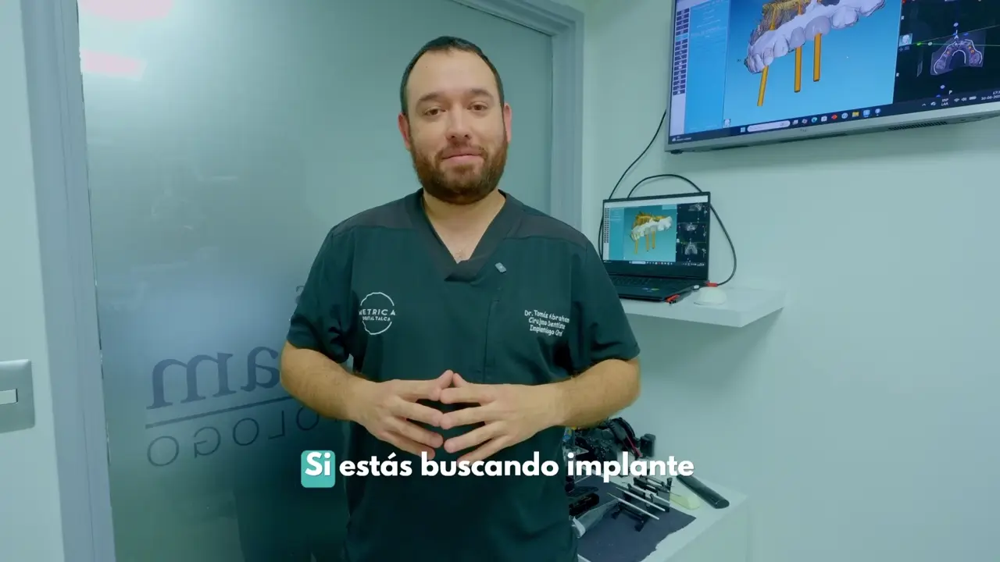

Ortodoncia
Consulta por brackets y opciones de atención para tu sonrisa.
Consultar por ortodoncia ↗CUIDAMOS TU SONRISA, CONTIGO
En Métrica Dental queremos que cuidar tu sonrisa sea más cercano. Conoce nuestra clínica y encuentra una atención personalizada para lo que necesitas.
Te escuchamos.
El primer paso es conversar.

LA CLÍNICA
Métrica Dental nace con un propósito: acercar la atención dental de calidad a más personas.
Creemos en una atención personalizada, con empatía y tiempo para escuchar. Queremos acompañarte a ti y a tu familia, explicando cada paso y ayudándote a conocer las alternativas para tu sonrisa.
Conoce más de nosotros en InstagramENCUENTRA TU PRÓXIMO PASO
Distintas necesidades, una misma forma de atenderte: con cercanía y atención a tu caso.
Conoce las alternativas de tratamiento para reemplazar dientes perdidos.
Explorar implantes ↗Consulta por brackets y opciones de atención para tu sonrisa.
Consultar por ortodoncia ↗Solicita una evaluación para conocer las opciones de tratamiento de caries.
Consultar por restauraciones ↗Conversa con nosotros para solicitar una evaluación de tus muelas del juicio.
Consultar por terceros molares ↗Consulta por atención y evaluación para tratamientos de conductos.
Consultar por endodoncia ↗Conoce las alternativas que podrían ser adecuadas para tu caso.
Consultar por coronas y carillas ↗IMPLANTES DENTALES
Cada sonrisa tiene una historia. El primer paso es una evaluación para conocer tus necesidades y las alternativas de tratamiento.
Solicita una hora para conversar sobre tus objetivos y conocer qué opciones podrían ser adecuadas para ti.
La indicación del tratamiento, sus etapas y su presupuesto se definen de forma individual después de una evaluación profesional.
Consultar por implantesCAMPAÑAS Y FACILIDADES DE PAGO
Escríbenos para conocer las campañas disponibles, sus condiciones y los medios de pago para tu tratamiento.
Consultar campañasCONVERSEMOS CON CONFIANZA
Algunas respuestas para dar el primer paso.
Pulsa cualquiera de los botones de WhatsApp y escríbenos. La clínica te informará sobre disponibilidad y confirmará tu atención en la conversación.
Sí. Puedes indicar qué tratamiento te interesa y solicitar una evaluación. Evita enviar diagnósticos, exámenes, fotografías clínicas o antecedentes médicos por este canal de contacto inicial.
Escríbenos para consultar las condiciones disponibles. El presupuesto de tu tratamiento se define según la evaluación de tu caso.
Nos encuentras en 1 Sur 690, Edificio Plaza Talca, Talca. En la sección de contacto tienes el enlace de ubicación en Google Maps.
Este canal se utiliza para contacto y agendamiento. No envíes información médica sensible, diagnósticos, exámenes ni antecedentes clínicos.